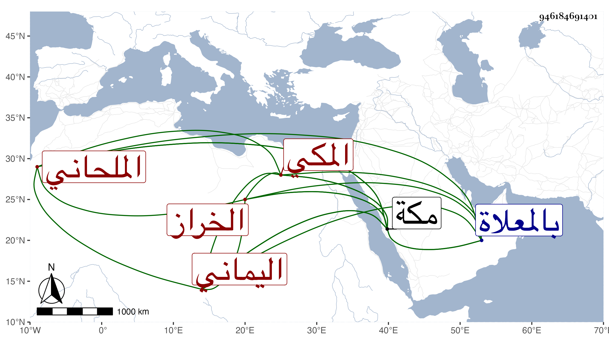

0902Sakhawi.DawLamic.ITO20230111-ara1.EIS1600.946184691401
Biography ID: 946184691401
592
علي بن أحمد بن علي بن أبي بكر بن سعد نور الدين اليماني ثم المكي الملحاني الخراز بمعجمتين بينهما راء مهملة . ولد بمكة ونشأ بها وأجاز له في سنة خمس وثمانمائة فما بعدها الحفاظ العراقي والهيثمي وابن الشرايحي وابن حجي والحسباني وكذا ابن صديق والمراغي وعائشة ابنة ابن عبد الهادي وآخرون أجاز لي وكان خيرا مباركا ساكنا يتكسب بالخرز في المسعى . مات في عشاء ليلة الأربعاء مستهل ربيع الأول سنة تسع وخمسين بمكة وصلى عليه بعد الصبح عند باب الكعبة ودفن بالمعلاة .
